Gullyverse: current approved baseline and technical acceptance Actual browser captures; fixed registered views are separate from public visitor-journey evidence. Desktop 1366×900, portrait 390×844, requested DPR .25 on SwiftShader. No physical mobile or realism certification. All locked geometry/material/lighting configuration preserved. Animated lights/screens can differ in time. Human visual approval remains with the user.
Baseline camera metadata · Acceptance camera metadata · Measured differences · Historical actual journey · Acceptance report
desktop-landing.png Camera {"x": 0, "y": 1.72, "z": 11.5, "yaw": 0, "pitch": 0.15356400212424307, "fov": 58}; viewport {"width": 1366, "height": 900, "dpr": 0.25}; quality 0; effective DPR 0.25. Matched pose/view: True. Mean RGB difference 0.000/255.
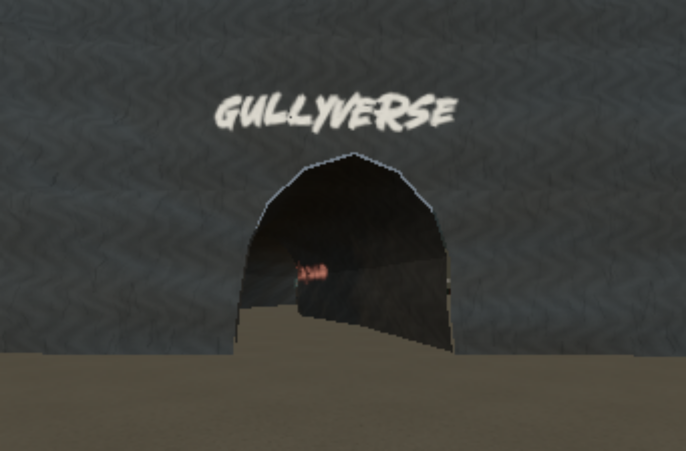
Current user-approved baseline After technical fixes 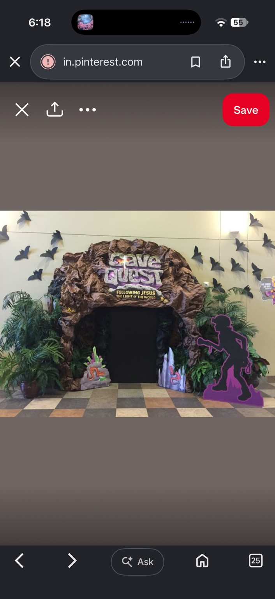
Historical reference; current approved layout takes precedence. desktop-tunnel-near.png Camera {"x": -0.825, "y": 1.72, "z": -3, "yaw": 0.33914730785814784, "pitch": 0.060698948452435945, "fov": 58}; viewport {"width": 1366, "height": 900, "dpr": 0.25}; quality 0; effective DPR 0.25. Matched pose/view: True. Mean RGB difference 0.000/255.
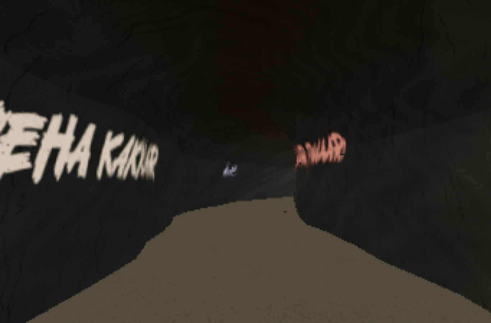
Current user-approved baseline After technical fixes Historical reference; current approved layout takes precedence. desktop-tunnel-mid.png Camera {"x": -6, "y": 1.72, "z": -22, "yaw": -0.27609701939543646, "pitch": 0.054466590134463616, "fov": 58}; viewport {"width": 1366, "height": 900, "dpr": 0.25}; quality 0; effective DPR 0.25. Matched pose/view: True. Mean RGB difference 0.000/255.
Current user-approved baseline 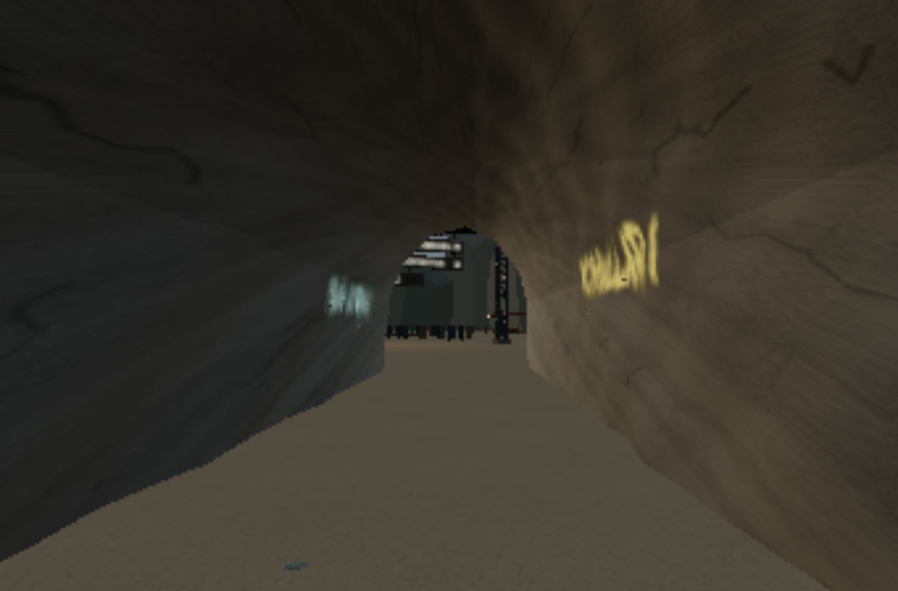
After technical fixes Historical reference; current approved layout takes precedence. desktop-tunnel-first-exit-reveal.png Camera {"x": -4.64, "y": 1.72, "z": -28, "yaw": -0.32003529021261234, "pitch": 0.0932947745942283, "fov": 58}; viewport {"width": 1366, "height": 900, "dpr": 0.25}; quality 0; effective DPR 0.25. Matched pose/view: True. Mean RGB difference 0.000/255.
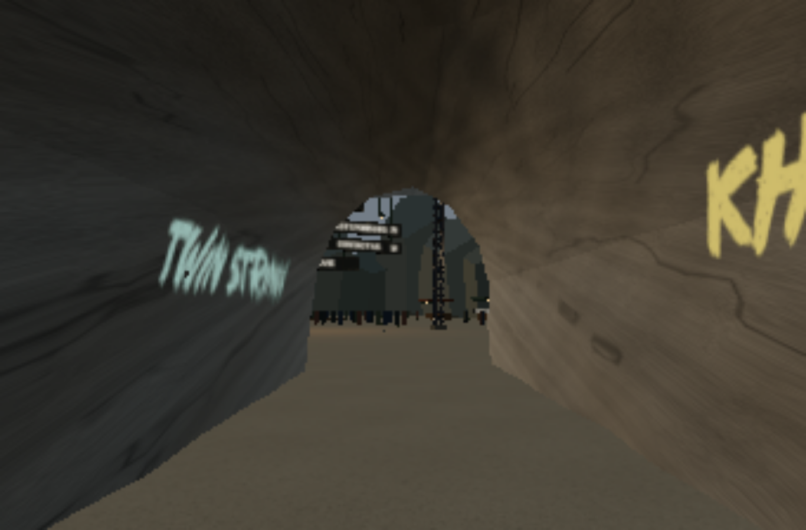
Current user-approved baseline After technical fixes Historical reference; current approved layout takes precedence. desktop-exit.png Camera {"x": -1.3, "y": 1.72, "z": -38, "yaw": -0.040602673065018385, "pitch": 0.17552851859732682, "fov": 58}; viewport {"width": 1366, "height": 900, "dpr": 0.25}; quality 0; effective DPR 0.25. Matched pose/view: True. Mean RGB difference 0.003/255.
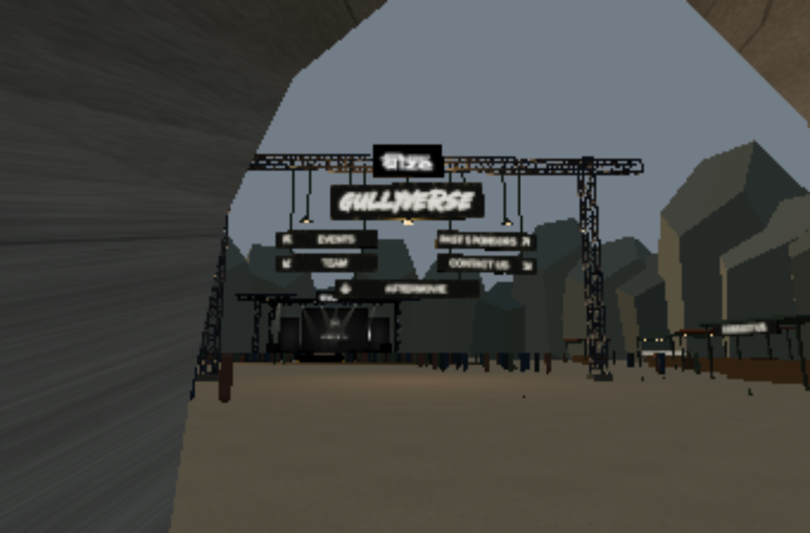
Current user-approved baseline After technical fixes Historical reference; current approved layout takes precedence. desktop-scaffold-front.png Camera {"x": 0, "y": 1.72, "z": -46, "yaw": 0, "pitch": 0.2559285578951724, "fov": 58}; viewport {"width": 1366, "height": 900, "dpr": 0.25}; quality 0; effective DPR 0.25. Matched pose/view: True. Mean RGB difference 0.002/255.
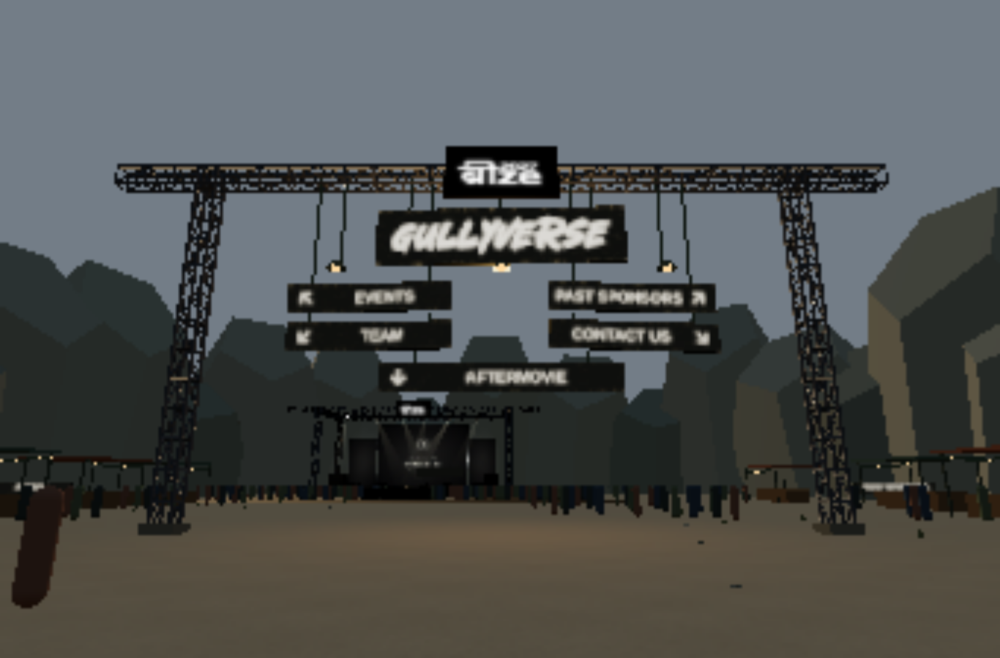
Current user-approved baseline After technical fixes Historical reference; current approved layout takes precedence. desktop-quarry.png Camera {"x": 0, "y": 1.72, "z": -51, "yaw": 0, "pitch": 0.11649649406590151, "fov": 58}; viewport {"width": 1366, "height": 900, "dpr": 0.25}; quality 0; effective DPR 0.25. Matched pose/view: True. Mean RGB difference 0.002/255.
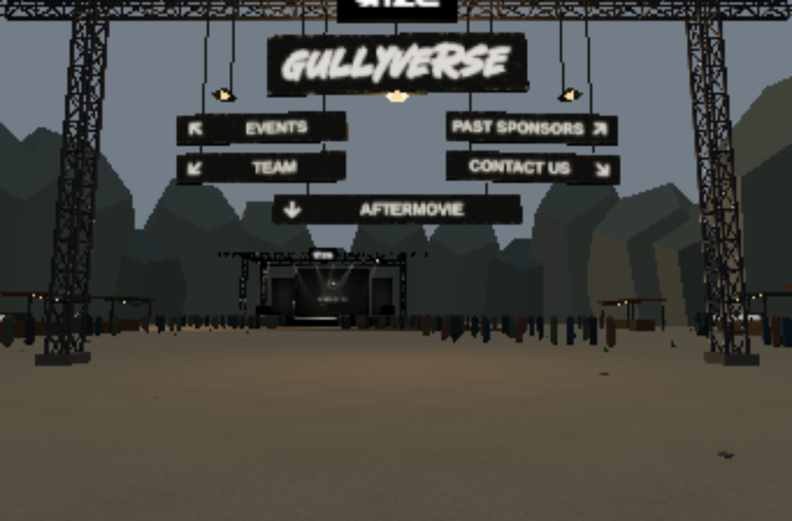
Current user-approved baseline After technical fixes 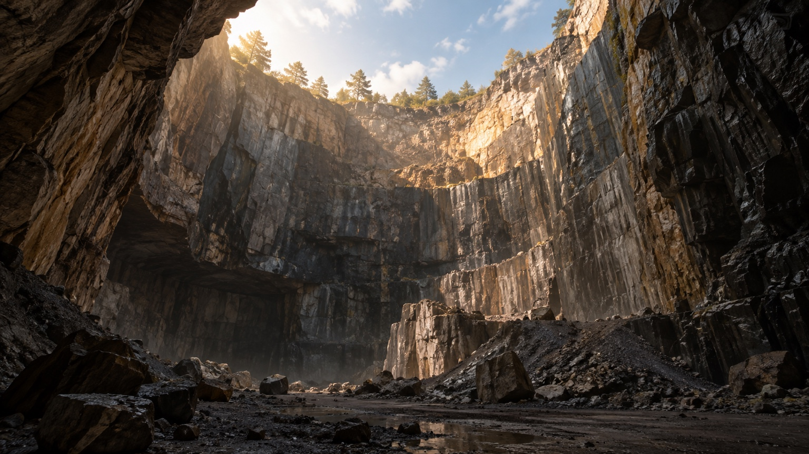
Historical reference; current approved layout takes precedence. desktop-left-stalls.png Camera {"x": -18, "y": 1.72, "z": -72.55, "yaw": 0.541893700676841, "pitch": 0.027500228761365767, "fov": 58}; viewport {"width": 1366, "height": 900, "dpr": 0.25}; quality 0; effective DPR 0.25. Matched pose/view: True. Mean RGB difference 0.014/255.
Current user-approved baseline 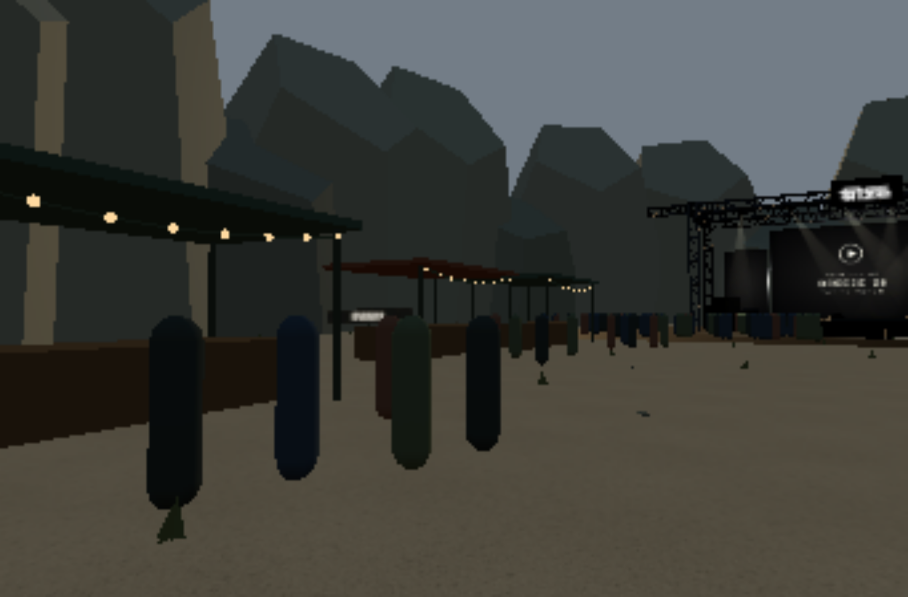
After technical fixes 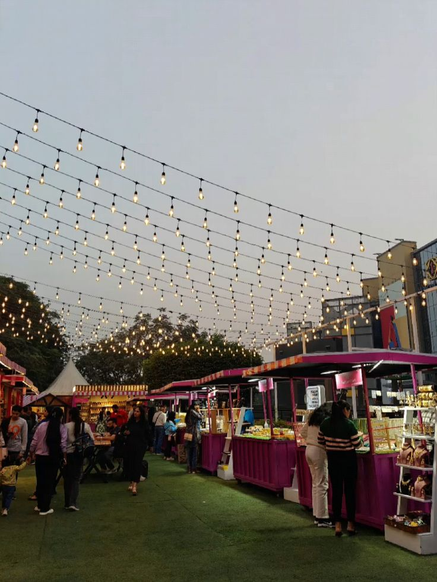
Historical reference; current approved layout takes precedence. desktop-right-stalls.png Camera {"x": 17.4, "y": 1.72, "z": -72.55, "yaw": -0.541893700676841, "pitch": 0.027500228761365767, "fov": 58}; viewport {"width": 1366, "height": 900, "dpr": 0.25}; quality 0; effective DPR 0.25. Matched pose/view: True. Mean RGB difference 0.000/255.
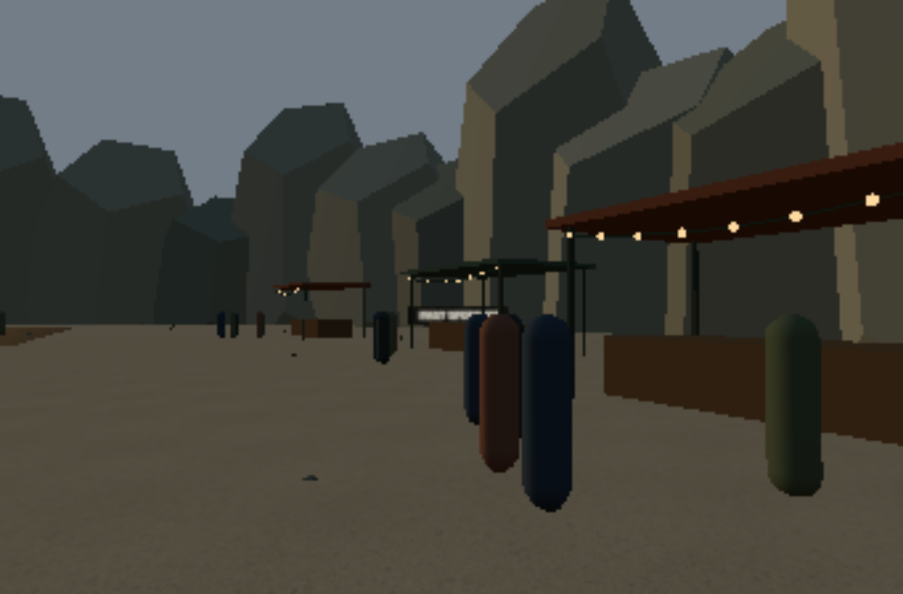
Current user-approved baseline After technical fixes 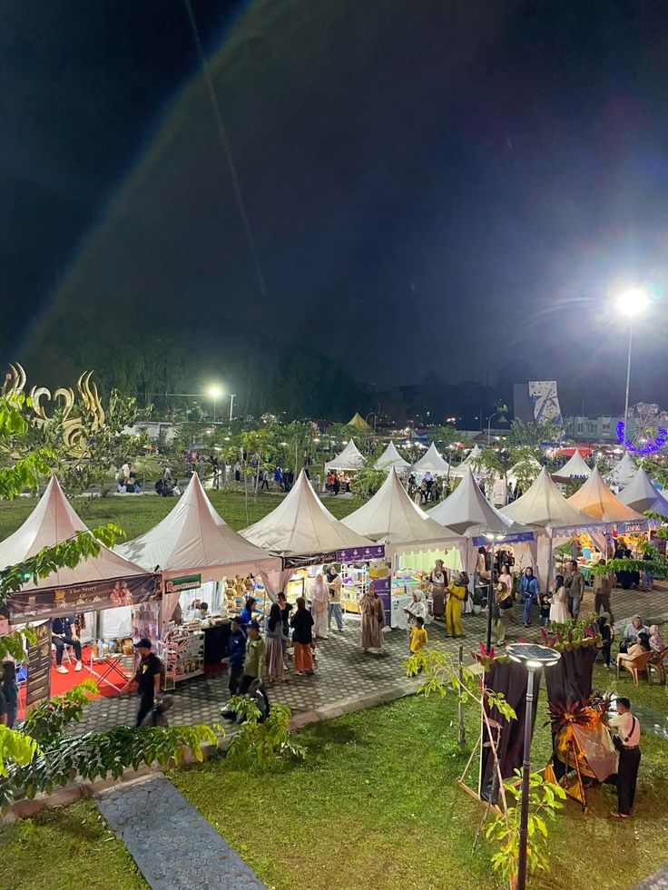
Historical reference; current approved layout takes precedence. desktop-aerial-map.png Camera {"x": -0.8999999999999986, "y": 165.93367317635833, "z": -77, "yaw": -1.570760033104047, "pitch": -1.5707963267948966, "fov": 64.00036968449932}; viewport {"width": 1366, "height": 900, "dpr": 0.25}; quality 0; effective DPR 0.25. Matched pose/view: True. Mean RGB difference 0.000/255.
Current user-approved baseline 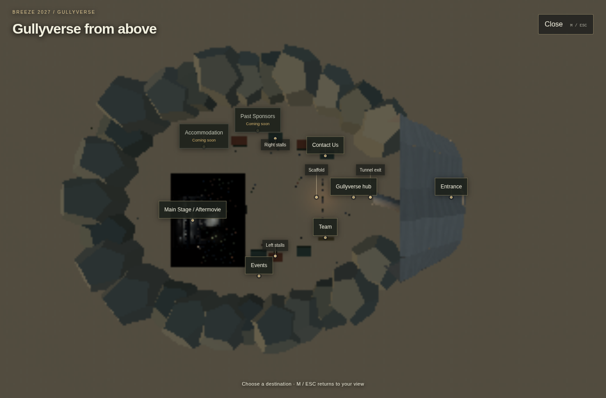
After technical fixes 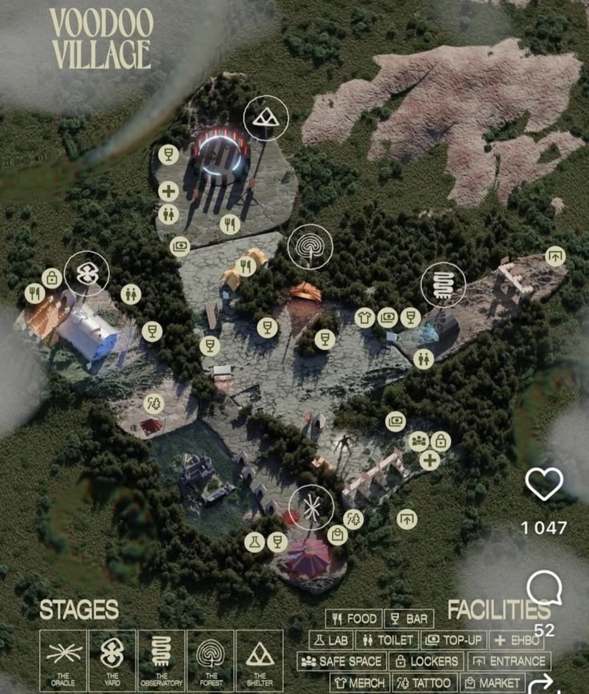
Historical reference; current approved layout takes precedence. desktop-stage-front.png Camera {"x": -10.5, "y": 1.72, "z": -110.8, "yaw": 0.08550529367820457, "pitch": 0.23363839418518068, "fov": 58}; viewport {"width": 1366, "height": 900, "dpr": 0.25}; quality 3; effective DPR 0.25. Matched pose/view: True. Mean RGB difference 2.475/255.
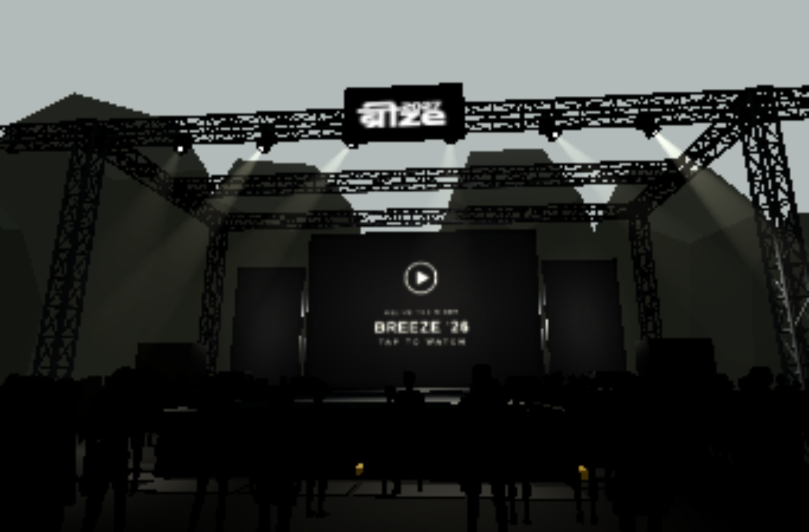
Current user-approved baseline 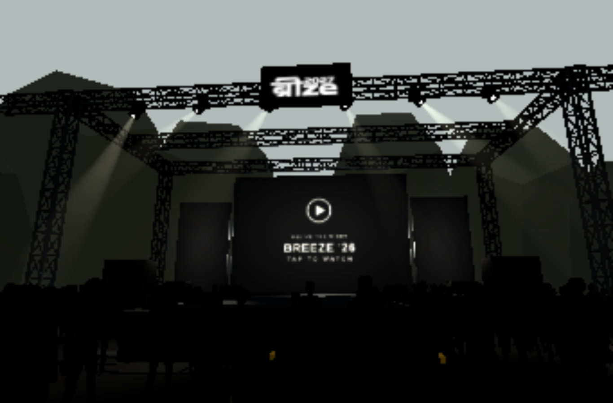
After technical fixes 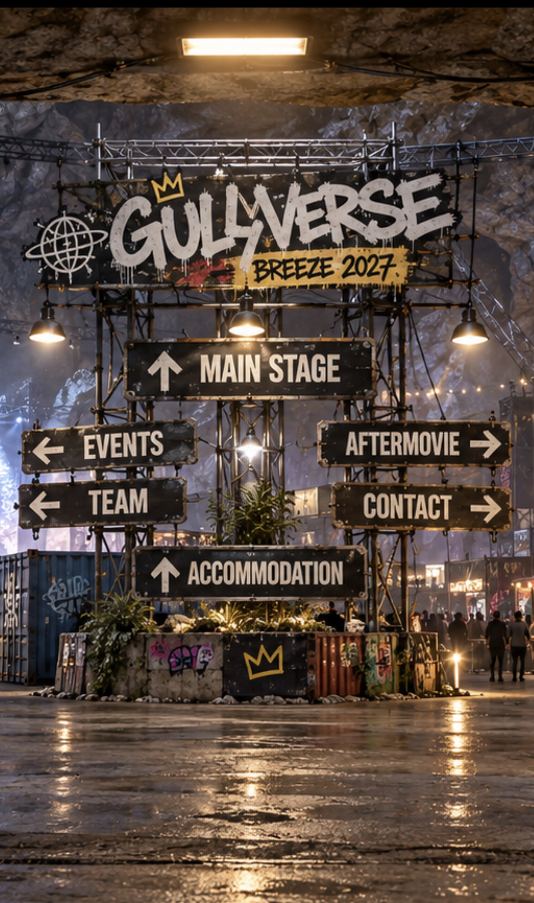
Historical reference; current approved layout takes precedence. desktop-stage-return.png Camera {"x": -10.5, "y": 1.72, "z": -108.3, "yaw": -2.9845260926263544, "pitch": 0.04882428111600402, "fov": 58}; viewport {"width": 1366, "height": 900, "dpr": 0.25}; quality 3; effective DPR 0.25. Matched pose/view: True. Mean RGB difference 0.000/255.
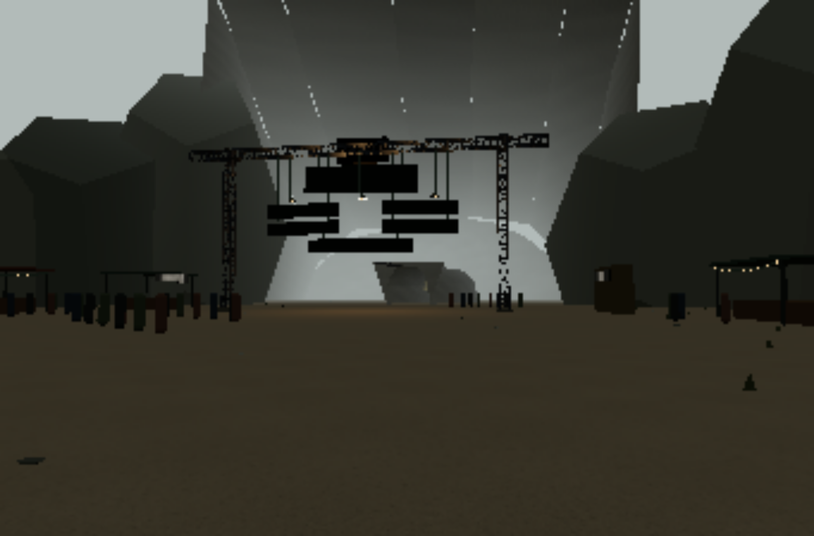
Current user-approved baseline After technical fixes Historical reference; current approved layout takes precedence. desktop-stage-ground-transition.png Camera {"x": -10.5, "y": 1.72, "z": -108.3, "yaw": -2.9845260926263544, "pitch": 0.04882428111600402, "fov": 58}; viewport {"width": 1366, "height": 900, "dpr": 0.25}; quality 3; effective DPR 0.25. Matched pose/view: True. Mean RGB difference 0.000/255.
Current user-approved baseline After technical fixes Historical reference; current approved layout takes precedence. desktop-boundary-menu.png Camera {"x": -10.5, "y": 1.72, "z": -106.67999999999999, "yaw": 0, "pitch": 0.16, "fov": 58}; viewport {"width": 1366, "height": 900, "dpr": 0.25}; quality 3; effective DPR 0.25. Matched pose/view: True. Mean RGB difference 1.163/255.
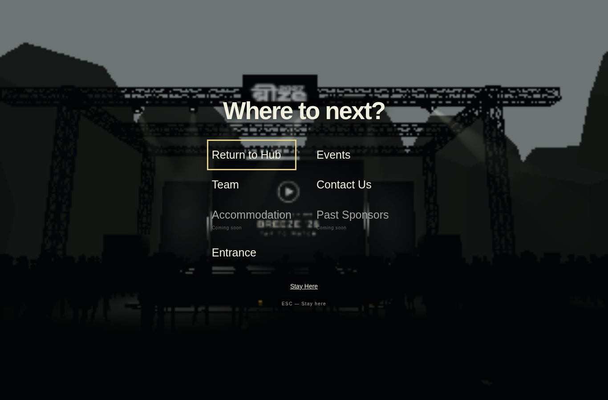
Current user-approved baseline 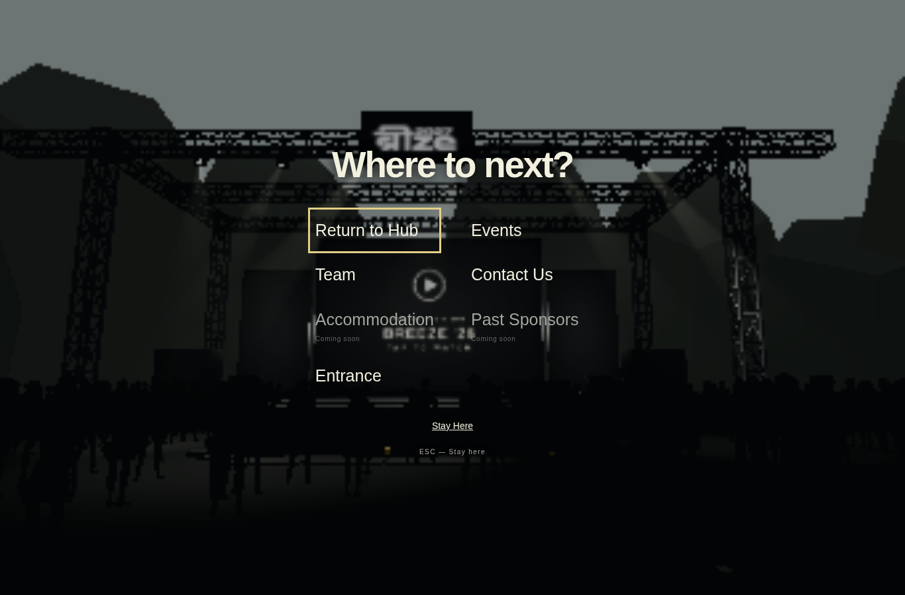
After technical fixes Historical reference; current approved layout takes precedence. mobile-landing.png Camera {"x": 0, "y": 1.72, "z": 11.5, "yaw": 0, "pitch": 0.15356400212424307, "fov": 79.43425835096338}; viewport {"width": 390, "height": 844, "dpr": 0.25}; quality 1; effective DPR 0.25. Matched pose/view: True. Mean RGB difference 0.000/255.
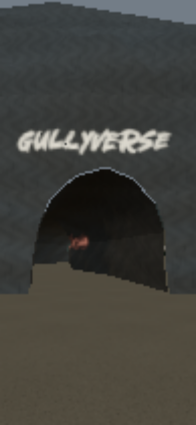
Current user-approved baseline After technical fixes Historical reference; current approved layout takes precedence. mobile-tunnel-mid.png Camera {"x": -6, "y": 1.72, "z": -22, "yaw": -0.27609701939543646, "pitch": 0.054466590134463616, "fov": 66.97983708810015}; viewport {"width": 390, "height": 844, "dpr": 0.25}; quality 1; effective DPR 0.25. Matched pose/view: True. Mean RGB difference 0.000/255.
Current user-approved baseline 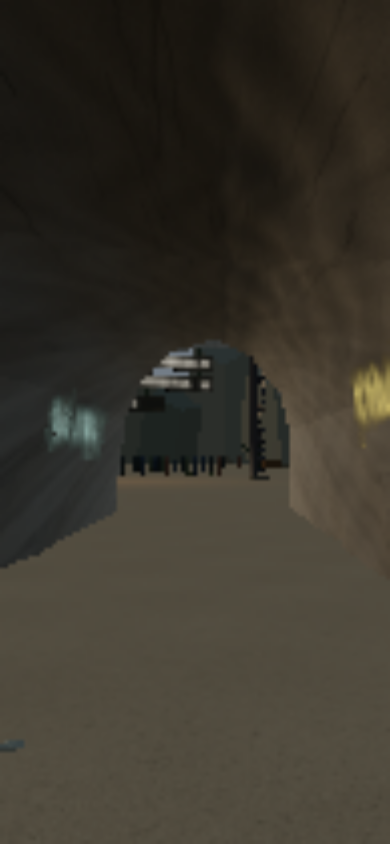
After technical fixes Historical reference; current approved layout takes precedence. mobile-exit.png Camera {"x": -1.3, "y": 1.72, "z": -38, "yaw": -0.040602673065018385, "pitch": 0.17552851859732682, "fov": 79.43425835096338}; viewport {"width": 390, "height": 844, "dpr": 0.25}; quality 1; effective DPR 0.25. Matched pose/view: True. Mean RGB difference 0.000/255.
Current user-approved baseline 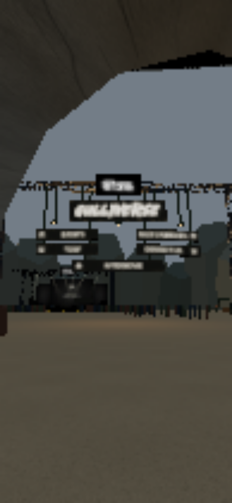
After technical fixes Historical reference; current approved layout takes precedence. mobile-scaffold-front.png Camera {"x": 0, "y": 1.72, "z": -46, "yaw": 0, "pitch": 0.2559285578951724, "fov": 88.7706475853118}; viewport {"width": 390, "height": 844, "dpr": 0.25}; quality 1; effective DPR 0.25. Matched pose/view: True. Mean RGB difference 0.000/255.
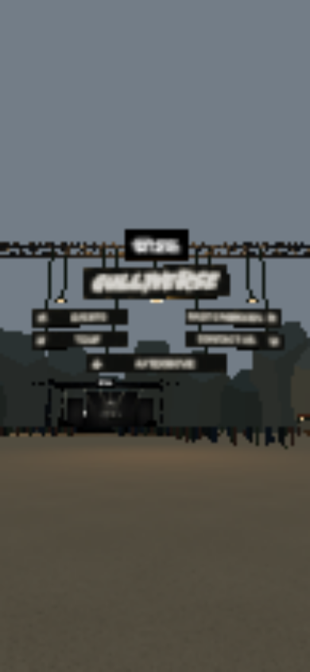
Current user-approved baseline After technical fixes Historical reference; current approved layout takes precedence. mobile-quarry.png Camera {"x": 0, "y": 1.72, "z": -51, "yaw": 0, "pitch": 0.11649649406590151, "fov": 100.36920599534565}; viewport {"width": 390, "height": 844, "dpr": 0.25}; quality 1; effective DPR 0.25. Matched pose/view: True. Mean RGB difference 0.000/255.
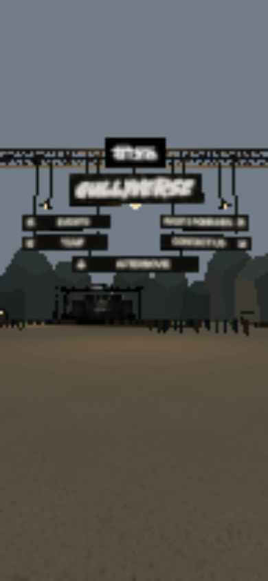
Current user-approved baseline After technical fixes Historical reference; current approved layout takes precedence. mobile-aerial-map.png Camera {"x": -0.8999999999999986, "y": 233.84848243444554, "z": -77, "yaw": 0, "pitch": -1.5707963267948966, "fov": 80}; viewport {"width": 390, "height": 844, "dpr": 0.25}; quality 1; effective DPR 0.25. Matched pose/view: True. Mean RGB difference 0.000/255.
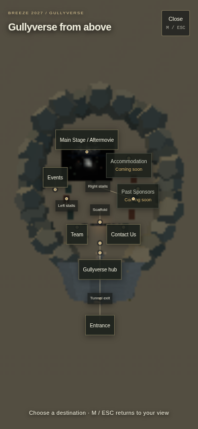
Current user-approved baseline After technical fixes Historical reference; current approved layout takes precedence. mobile-stage-front.png Camera {"x": -10.5, "y": 1.72, "z": -110.8, "yaw": 0.08550529367820457, "pitch": 0.23363839418518068, "fov": 79.43425835096338}; viewport {"width": 390, "height": 844, "dpr": 0.25}; quality 3; effective DPR 0.25. Matched pose/view: True. Mean RGB difference 2.546/255.
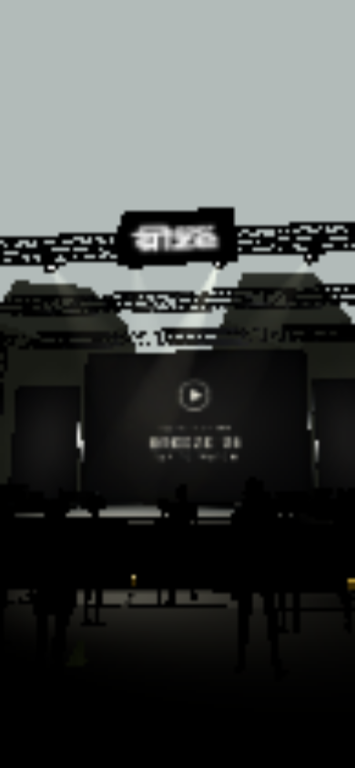
Current user-approved baseline 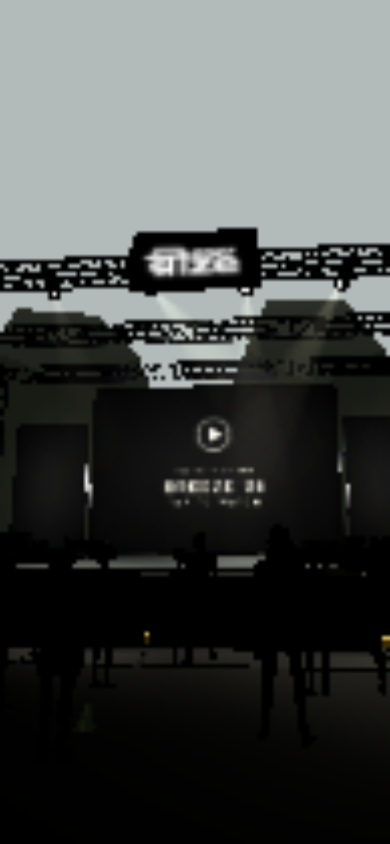
After technical fixes Historical reference; current approved layout takes precedence. mobile-stage-return.png Camera {"x": -10.5, "y": 1.72, "z": -108.3, "yaw": -2.9845260926263544, "pitch": 0.04882428111600402, "fov": 79.43425835096338}; viewport {"width": 390, "height": 844, "dpr": 0.25}; quality 3; effective DPR 0.25. Matched pose/view: True. Mean RGB difference 0.000/255.
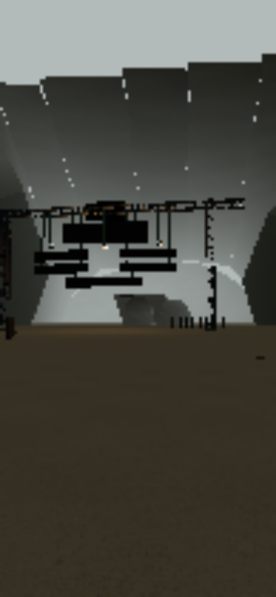
Current user-approved baseline After technical fixes Historical reference; current approved layout takes precedence. mobile-boundary-menu.png Camera {"x": -10.5, "y": 1.72, "z": -106.67999999999999, "yaw": 0, "pitch": 0.16, "fov": 58}; viewport {"width": 390, "height": 844, "dpr": 0.25}; quality 3; effective DPR 0.25. Matched pose/view: True. Mean RGB difference 1.054/255.
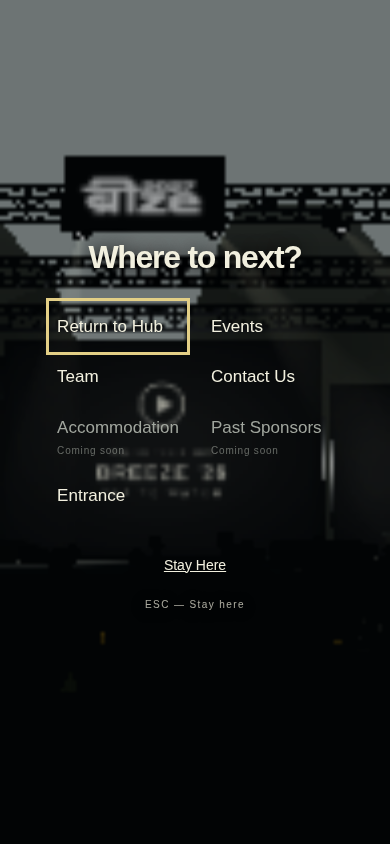
Current user-approved baseline 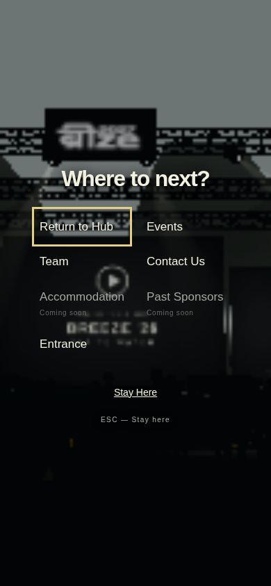
After technical fixes Historical reference; current approved layout takes precedence. Previous captures for context October 10 hub; different pose/time, not matched baseline. October 10 stage; historical reference only. Actual acceptance-only detail and playback No matched before capture exists for these two views.
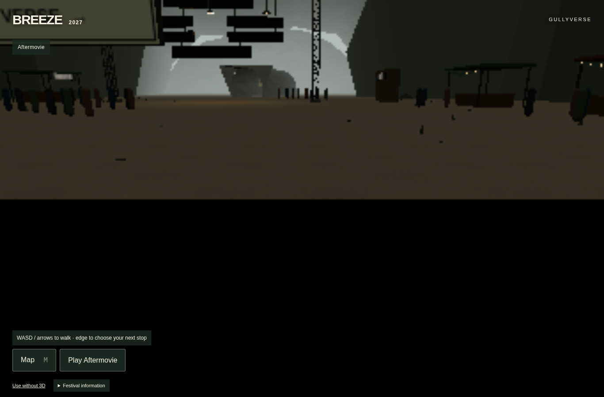
Preserved dark floor boundary; fixed review pose. 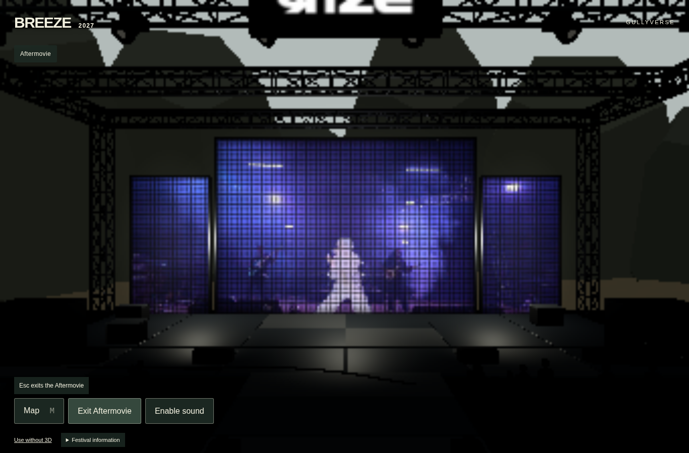
Actual original shared three-panel movie playback. Actual uninterrupted journey recording · Browser trace · Extra camera metadata